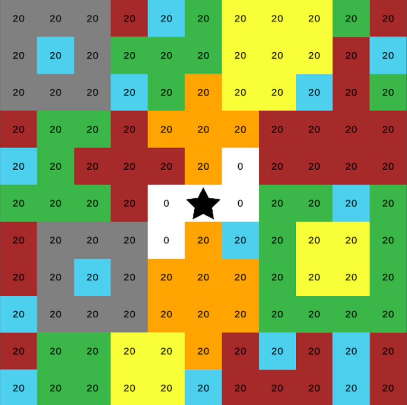

Project link: Classic RTS프로젝트 링크: Classic RTS

- Developed every game element in Unity C#, including the UI and core gameplay systems.UI 및 핵심 게임 플레이 시스템을 포함한 모든 게임 요소를 Unity C#으로 개발
- Planned and designed game systems around the essential ingredients of an engaging, effective management game.매력적이고 효과적인 경영 게임을 구현하기 위한 핵심 요소에 집중하여 게임 시스템을 기획 및 설계
- Collected player feedback through MDA-based playtests (Mechanics–Dynamics–Aesthetics) and applied patches to improve evaluation scores.MDA(메커닉–다이내믹–미학) 기반 플레이테스트를 통해 플레이어 피드백을 수집하고, 점수 개선을 위해 패치를 적용했습니다
Genre: #Clicker #RTS #Strategy #Upgrades #FiniteResources장르: #클리커 #RTS #전략 #업그레이드 #유한한 자원
Game overview:간단 게임 소개:
Enjoy managing cost efficiency with a limited pool of resources.제한된 자원을 바탕으로 비용 효율성을 관리하는 즐거움을 느껴보세요.
Think carefully about how to use each resource efficiently and optimise your choices. Hiring more workers may seem like a good way to increase production, for example, but consuming too much food in the process can reduce overall efficiency.각 자원을 얼마나 효율적으로 활용할지 신중하게 고민하고 최적화해 보세요.
예를 들어, 자원 생산을 늘리기 위해 더 많은 노동자를 고용하는 전략이 좋아 보일 수 있지만, 그 과정에서 식량을 과도하게 소비하면 전체 효율성이 떨어질 수 있습니다.
At its core, the game challenges you to survive by gathering resources on a grid-based map.이 게임의 핵심은 그리드 기반 맵에서 자원을 수집하며 생존에 도전하는 것입니다.